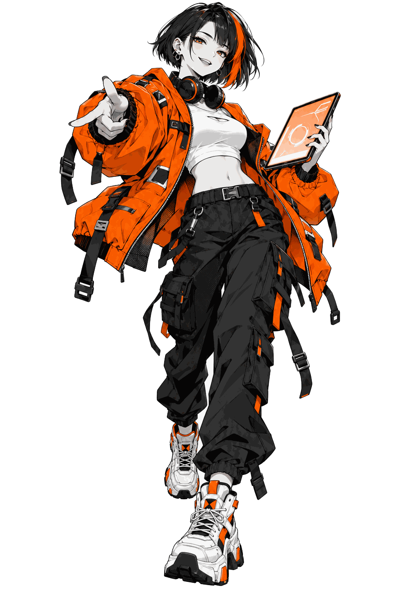

3D Tilt
01
Vol.01网页动效图鉴 · 2026
Motion
动效图鉴Field
Guide
Guide
网页上那些让你“哇”一声的瞬间，都有名字。
按一下、拖一下、悬停一下，导览员会告诉你它叫什么、怎么做的。

Hover me ↘
MLX-0001-2026
01
按钮展厅Hall 01 · Press · 9 Exhibits
动效速度 Speed1.00x
02
光标展厅Hall 02 · Cursor · 3 Exhibits
把鼠标变成力、轨迹和光。
X-RAY ON → 看见原理
Attraction field＋
靠近一点，让按钮追过来。手机轻点空白处
Distance → image＋
划过展柜，留下一串瞬间。手机轻点，展开图片
Signal found / 03
用光，找出暗处的内容。手机轻点，让光移动
✳Hidden in
plain sight.
plain sight.
01 / 遮罩02 / 插值03 / 光的范围
● Light control
内容一直都在。
只让光照到的部分显现。
OTHER
SIDE.↗Explore
Difference / 混合反色SIDE.↗Explore
Custom Cursor
Make
your mark.惯性轨迹 / 划过或轻点
your mark.惯性轨迹 / 划过或轻点
Cursor Trail
03
文字展厅Hall 03 · Type · 2 Exhibits
同一句话，换一种出场方式。
Edit → Replay → Copy
One character at a time
Ready / 08 characters
空格换行
Stagger
● Signal locked
Ready / 13 characters
A—Z / 0—9
Locked
MOTION
Weight 100 → 900Variable Font Wave
IN
MOTION.IN
MOTION.
Clip → FillMOTION.IN
MOTION.
Text Mask Reveal
字符间隔 65ms
Typewriter
04
滚动展厅Hall 04 · Scroll · 5 Exhibits
你的滚轮，就是时间轴。
Play → Understand → Copy
Layer 01 / 0.15 · 02 / 0.45 · 03 / 0.90
IN MOTION
遠
CITYIN MOTION
04NEAR / 街区观察站 ↗
Parallax
Scroll to advance / 钉住现场
01 / Approach走进
街区。↘
街区。↘
Pinned Scroll
Vertical input → Horizontal output Frame / 01PASS
Frame / 01PASS Frame / 02THROUGH
Frame / 02THROUGH Frame / 03THE
Frame / 03THE Frame / 04CITY
Frame / 04CITY
Frame / 01PASSFrame / 02THROUGHFrame / 03THEFrame / 04CITYHorizontal Scroll
Progress → clip / 向下滚动 LOOK
LOOK
CLOSER.
LOOKCLOSER.
Scroll Reveal
Velocity → skew / 快速滚动试试
FAST
FORWARD.
FORWARD.
Scroll Velocity Skew
End of route / 05 → Change the scene ↓
05
转场展厅Hall 05 · Transition · 4 Exhibits
让前后两个状态，接得上。
Play → Understand → Copy
First → Last → Invert → Play
FLIP Layout
点击图片 / 同一张图，两个位置A closer
look.
A closerlook.
Shared Element
Cover → Swap → Reveal
Scene / 01DAY
SHIFT.☀
SHIFT.☀
Curtain / Wipe
Browser transition
Station / 01ON
THE AIR.✳
THE AIR.✳
View Transitions API
06
着色器展厅Hall 06 · Shader · 4 Exhibits
触碰画面，改变像素的走向。
Play → Understand → Copy
Pixel laboratory / 06NOTHING
STAYS STILL✳
STAYS STILL✳
水波、噪声、色彩、粒子。
四种方式，让平面有了触感。
LIQUIDSIGNAL
Hover Distortion
BETWEENFRAMES
Displacement Transition
FLOW
STATE
Three colors / slow flow正在准备画面STATE
Noise Gradient
FORM / 06
Touch → scatter → gather正在准备画面Particles to Shape
06 / 06 · You have reached the end ✳
Collection收藏进度 3 / 6
已认识 0 / 14 件
三个展厅，十四件可玩的动效。点选一个街区，接着逛。
Hall 01 ↗按钮9 件 · 已开放已认识 0 / 9
Hall 02 ↗光标3 件 · 已开放已认识 0 / 3
Hall 03 ↗文字2 件 · 已开放已认识 0 / 2
Hall 04滚动第二期解锁
Hall 05转场第二期解锁
Hall 06着色器第二期解锁